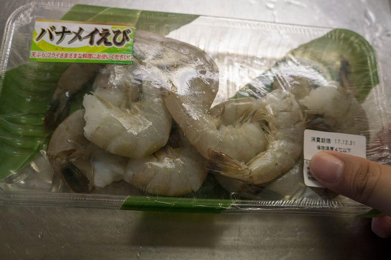
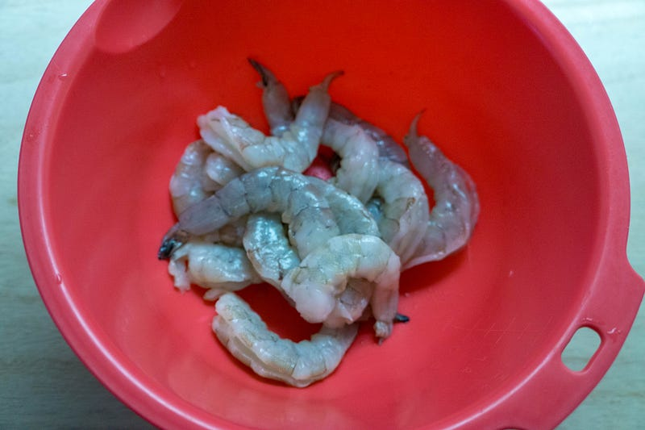
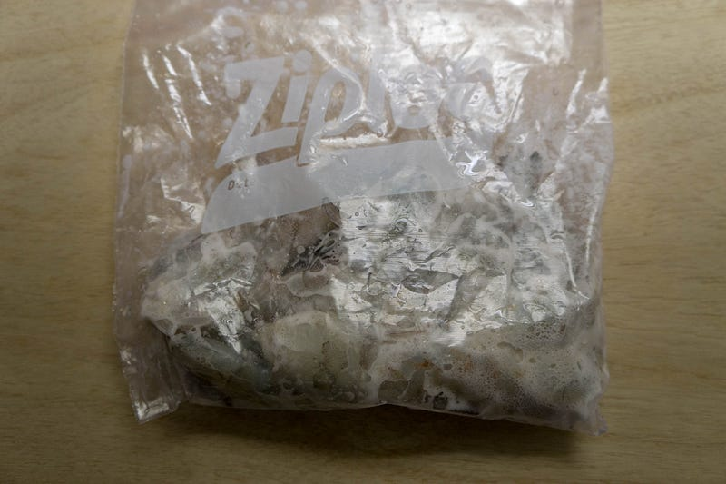
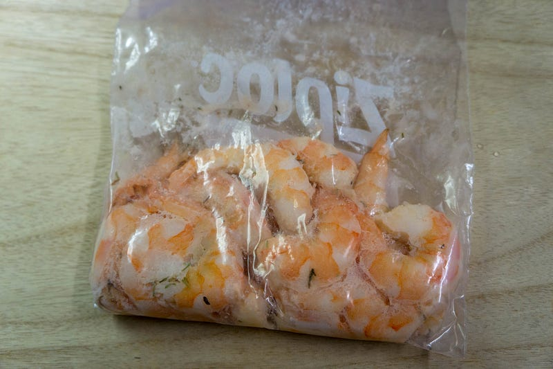
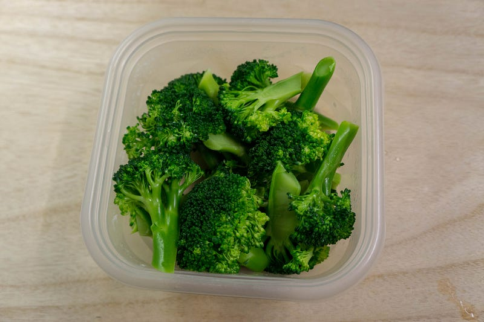
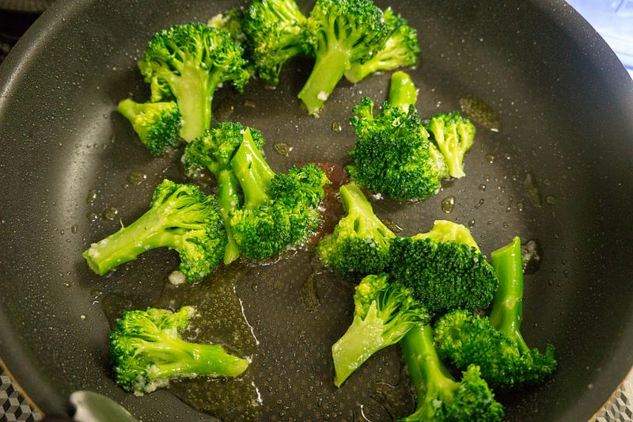
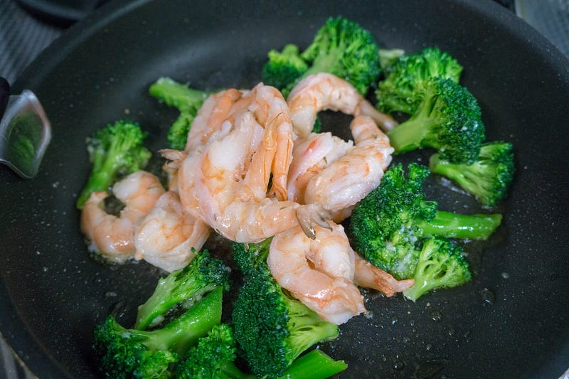
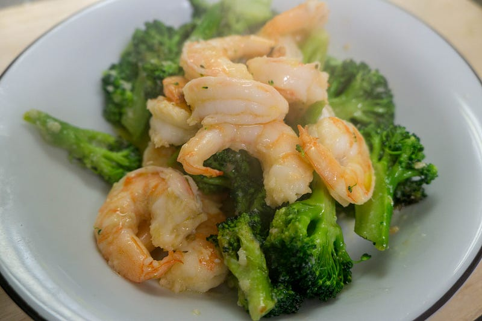

パナメイエビを低温調理する
パナメイエビを低温調理する
師走のご祝儀相場だとエビ類は高いのが難点だ… だが久しぶりにエビが食べたい。予定していなかったので急遽スーパーを見たら、芝エビ…じゃなくて、パナメイエビならいける。

というわけで当然のようにanovaで下処理する事にする。
文献によればエビはこれまで料理してきた肉類とは違い、1時間以上の長時間やる必要はないらしい。それどころか、収穫後の下処理の方法によってはパパイヤやパイナップルにも含まれる酵素がエビに広がり、料理した時にぐっちゃぐちゃになる可能性もあるという。
プリプリ食感にするには重曹だ！ということらしい。というわけでこのあたりの内容についてはいつものSerious Eatsで読んだ。
Shrimp cooked through traditional methods can be fantastic but nailing the perfect temperature can be a bit hit or miss…www.seriouseats.com
エビは実はあまり料理したことがない。だけど、なんか重曹で下ごしらえというのは聞いたことある。なるほど。
七條 清孝さんのえびを使った「えびフライ」のレシピページです。子どもから大人まで幅広く愛されるえびフライ。冷凍えびでも中身はプリッと柔らかく、衣はサクサクに仕上がる「至福のえびフライ」をご紹介します。 材料: えび、衣、重曹、ラード、タ…www.kyounoryouri.jp
さて、というわけでまずはエビの下ごしらえ。この部分は「あ！エビって殻あるんだった。忘れてた」という私の発言を聞いた妻が
…というようなサイタマの顔をしながら殻剥きと背わた取りをしてくれました。その間に私はフルーツポンチを作りました…。

下ごしらえが済んだエビは塩と重曹（ちゃんと食用を使うんだぜ！）を入れてジップロックで真空パック（もどき）。

これを57℃で30分。

本当は「これにガーリックバターでもかけてそのまま食べるかな〜」とか考えていたのだけど、お湯からエビを出した時間と仕上げの時間が少し空いてしまった（つまり中途半端に冷めた）のと、ブロッコリーが残っている事がわかったので、エビブロッコリー炒めにした。



味付けはオリーブオイル、塩、チューブガーリックのみ。大人だけだったら本当はここに鷹の爪を入れたいところ。オリーブオイルは多め、塩味もハッキリ目で。

見目美しくできたし、プリプリでうまい！
ただ、低温調理をする意味があるのか、という意味では微妙なところ。もっと生っぽいカクテルシュリンプ的な食べ方をすればはっきり違いがでるだろうけど、今回は炒め物にしたので、例えば質問として「低温調理したから」おいしいのか、「上手に炒められた」からおいしいのか、どっち？と作り方を知らされずに聞かれてもイマイチわからない気がする。
次回やるときは54℃のカクテルシュリンプに挑戦してみたいところ。まずその前にエビの値段の問題があるが。